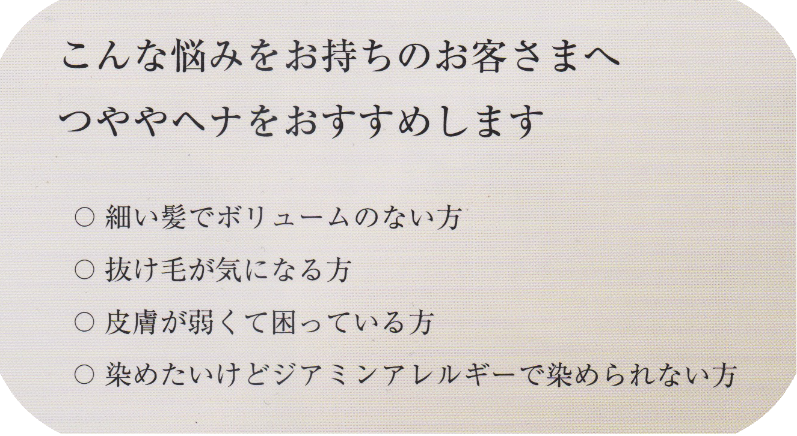

つややの特徴
つややは、インドの農場で無農薬栽培された高品質な葉を使用しています。
・カラーバリエーションが多いので、カラーからの切り替えとして提案できます。
・施術時間は自然放置で、1時間～1時間半くらいです。
・つややは、固まりにくく伸びがよいので、塗布が楽で流しやすいです。
・ジアミンが入っていないので、化学物質に過敏な方にも安心です。
・傷んだ髪が修復されるので、トリートメントとしておすすめできます。
・髪と頭皮ケアメニューのバリエーションが多くなります。（地肌の汚れを取るため、スカルプケア、ヘッドスパ、オイルマッサージなどのバリエーションがあり、おすすめです。）
・頭皮のクレンジング作用により、育毛効果につながります。
つややのメリット
髪に栄養をあたえ、ダメージを修復する働きがあります。
・つややを続けていくうちに、髪にツヤ・ハリが生まれスタイリングしやすくなります。
・紫外線やドライヤーの熱から、髪を保護します。
・根元が立ち上がるため、生えてきた白髪が目立ちにくくなります。
・化学染料（ジアミン）が入っていないため、かぶれにくいです。
（ただし植物アレルギーを起こす場合があります。）
・毛穴の余分な皮脂がとれ、育毛効果につながります。
|